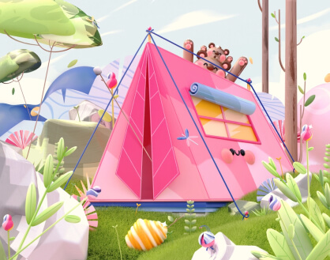

Innovative Projects Driving Sustainable Change
Discover how ATERN is applying technology to solve real-world environmental challenges in Nepal and beyond.
- All
- Ongoing
- Completed
- Research
- Technology

Himalayan Biodiversity Monitoring
Using drone technology and AI to track endangered species in the Himalayas.

Smart Water Management System
IoT-based system for efficient water distribution in rural areas.
Climate Change Adaptation Program
Developing resilient agricultural practices using data analytics.
Renewable Energy Microgrid
Solar-wind hybrid system for remote villages.
Partner with ATERN for Impactful Projects
Join us in creating sustainable solutions for Nepal's environmental challenges.